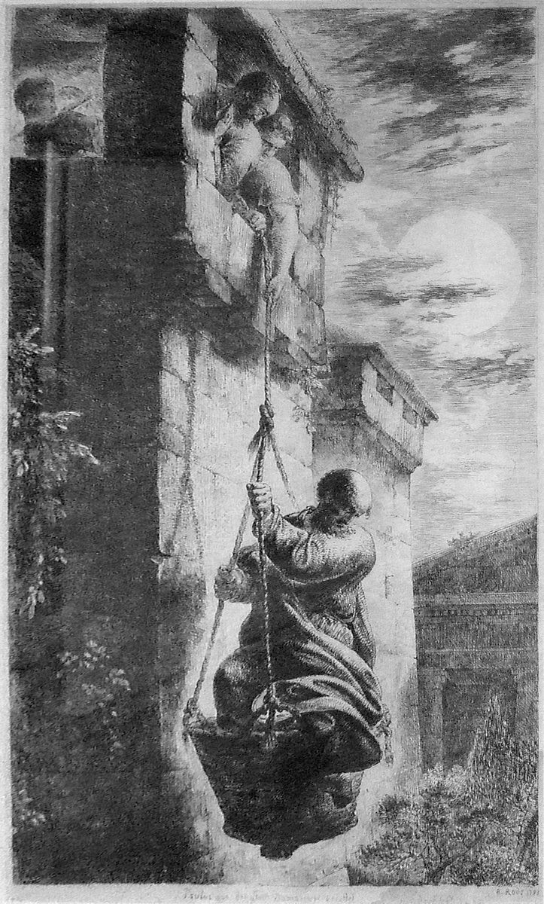

2 Corinthians 11 — The Mister Translation

⚠ The etching joins two accounts. The window is Paul’s own detail (v33, ‘through a window’), which Luke does not give; the night and the two helpers come from Acts 9:25, ‘his disciples, taking him by night, let him down through the wall.’ Paul’s sentence names no helpers at all: ‘I was let down.’ The title on the Commons file page names the disciples, after Acts.

“A little foolishness” — the word that frames the whole speech. Ophelon aneichesthe mou mikron ti aphrosynēs, “I wish you would put up with me in a little foolishness.” The noun aphrosynē stands in four verses of the New Testament: Mark 7:22, in a list of what comes out of the heart, and three in this chapter (vv1, 17 and 21). From here Paul speaks as a fool on purpose, and the speech does not end with the chapter. ⚠ The second clause, alla kai anechesthe mou, is the same form in Greek whether it states a fact (“you are putting up with me”) or gives an order (“do put up with me”), and the shelf divides on it. The ASV reads “but indeed ye do bear with me”; the NWT 1984 reads “But, in fact, YOU are putting up with me!”; the KJV reads “and indeed bear with me”; the Douay reads “but do bear with me”; the NIV reads “Yes, please put up with me!” This translation takes the statement, with the ASV and the NWT, because the chapter uses the same verb again as a plain fact: the Corinthians put up with the rivals (v4) and with fools (vv19–20). “Put up with” is kept each time.
“I betrothed you to one husband” — Paul as the father of the bride. Hērmosamēn, from harmozō, to fit together and so to join in marriage, stands in one verse of the New Testament, this one. Paul has arranged the match and must hand the bride over intact on the wedding day (parastēsai, “to present”). His jealousy is theou zēlō, “with God’s jealousy”: the jealousy that Exodus 34:14 makes into a name, “Jehovah, whose name is Jealous.” The KJV reads “I have espoused you to one husband”; the NWT 1984 reads “I personally promised YOU in marriage to one husband”; the Douay keeps the genitive, “with the jealousy of God.”
Eve and the serpent — “deceived,” and the word for minds. Ho ophis exēpatēsen Heuan, “the serpent deceived Eve,” is the confession of Genesis 3:13, “The serpent deceived me.” The verb exapataō stands in six verses of the New Testament, and two of them are about Eve: this one and 1 Timothy 2:14. ⚠ The minds at risk are ta noēmata, and that noun stands in six verses of the New Testament, five of them in this letter: Satan’s schemes at 2:11, the minds hardened at 3:14 and blinded at 4:4, every thought taken captive at 10:5, and this verse. The sixth is Philippians 4:7, where the peace of God guards them. English has to say “schemes,” “minds” and “thought”; the Greek says one word, and in this letter it is the ground Satan and Paul are fighting over.
“Sincerity” — the word that meant generosity one chapter ago. Haplotēs is singleness, an undivided heart. At 8:2 and 9:11 this translation rendered it “generosity,” the open hand of a giver who keeps nothing back. Here it is the bride who keeps nothing back from her husband.
⚠ “And the purity” — missing from the King James. The critical editions (Westcott–Hort, Tregelles and the Nestle–Aland 28th) print kai tēs hagnotētos, “and the purity.” The Byzantine text of Robinson–Pierpont lacks the words and adds houtōs, “so.” The KJV reads “so your minds should be corrupted from the simplicity that is in Christ”; the Geneva reads “from the simplicity that is in Christ”; the Douay reads “fall from the simplicity that is in Christ,” translating the Latin Vulgate, which has a simplicitate quae est in Christo and no second noun. The ASV reads “the simplicity and the purity that is toward Christ”; the NWT 1984 reads “the sincerity and the chastity that are due the Christ”; the NIV merges the two nouns, “your sincere and pure devotion to Christ.” The apparatus behind this page lists editions, not manuscripts, so the manuscripts on each side are not named here.
“Another Jesus … a different spirit … a different gospel.” The first is allon Iēsoun; the other two are pneuma heteron and euangelion heteron. Galatians 1:6–7 uses the same two words the other way round, “a different (heteron) gospel, which is not another (allo).” Whether Paul means anything by the switch is argued, since Greek of this period often uses the two words interchangeably. ⚠ The Douay reads “another Christ,” from the Vulgate’s alium Christum; the Greek editions read “Jesus.” And the KJV reads “ye might well bear with him,” following the Byzantine past tense ēneichesthe; the critical text has the present, kalōs anechesthe, “you put up with it beautifully,” which is a sneer. The ASV reads “ye do well to bear with him”; the NWT 1984 reads “YOU easily put up [with him].”
⚠ Super-apostles — who were they? Tōn hyperlian apostolōn, “the over-and-above apostles”: hyperlian joins hyper, “beyond,” and lian, “exceedingly,” and the phrase stands in two verses of the New Testament, this one and 12:11. Two readings are old and alive. In one, they are the rivals in Corinth, the same men v13 calls false apostles, and the title mocks how they spoke of themselves. In the other, they are the leading apostles at Jerusalem, whose names the rivals were using, so that Paul measures himself against the real apostles while attacking the false ones. The text does not say which, and this page does not choose. The NIV puts the word in quotation marks, “super-apostles”; the NWT 1984 reads “YOUR superfine apostles”; the KJV and the ASV both read “the very chiefest apostles”; the Douay reads “the great apostles”; the TLB reads “these marvelous” and puts “messengers from God” in quotation marks. The quotation marks in the NIV and the TLB lean toward the first reading; “chiefest” leans toward the second.
“Untrained in speech” — idiōtēs. Idiōtēs tō logō: a private person, a layman, someone without professional training. It is the word Acts 4:13 uses of Peter and John, “unlettered and ordinary men,” and idiōtēs stands in five verses of the New Testament: that one, 1 Corinthians 14:16, 23 and 24, and this one. Paul grants the charge quoted at 10:10, that his speech is contemptible, and denies only the part about knowledge. The KJV and the ASV both read “rude in speech,” where “rude” means unpolished, not impolite; the NWT 1984 reads “unskilled in speech”; the NIV reads “untrained as a speaker.”
“Did I commit a sin?” — the offence of not taking money. Dōrean, “as a gift, free of charge.” At 1 Corinthians 9:12 Paul had already said he would not use his right to be supported, “so as not to hinder the good news of Christ.” Here the refusal has been turned against him, and he answers with irony: was it a sin to lower himself so that they could be raised?
⚠ “I robbed other congregations” — a soldier’s words. Esylēsa, from sylaō, stands in one verse of the New Testament, this one; the lexicons give its sense as to strip or plunder, as soldiers strip the dead, and that sense is reported here rather than checked against a primary text. Its compound is the “rob temples” of Romans 2:22. The money he took is opsōnion, a soldier’s ration-pay: the word of Luke 3:14, of 1 Corinthians 9:7 (“who ever serves as a soldier at his own expense?”) and of Romans 6:23, “the wages of sin.” The campaign of 10:4 is still going: its weapons were not fleshly, and its pay came from other congregations. The KJV reads “I robbed other churches, taking wages of them”; the NWT 1984 reads “Other congregations I robbed by accepting provisions”; the Douay softens it, “I have taken from other churches”; the TLB puts the word “robbed” in quotation marks.
“A dead weight on no one.” Ou katenarkēsa oudenos. The lexicons trace the verb to narkē, numbness (the root of English “narcotic”): to go numb on someone, to lie on them like a dead weight. Katanarkaō stands in three verses of the New Testament, all in this letter: here and 12:13–14. The Geneva reads “I was not slothful to the hindrance of any man,” which keeps the numbness; the KJV reads “I was chargeable to no man”; the ASV reads “I was not a burden on any man”; the NWT 1984 reads “I did not become a burden to a single one.” Then a second word, abarē, “weightless,” for the promise he will keep.
The brothers from Macedonia. Philippians 4:15–16 says the Philippians, a Macedonian congregation, were the only one to share with him “in an account of giving and receiving,” and sent to his need in Thessalonica “both once and twice.” That the brothers of this verse came from Philippi is a common inference; the verse names only Macedonia.
“This boasting will not be stopped.” Ou phragēsetai, “will not be fenced in,” is the verb of Romans 3:19, “so that every mouth may be stopped.” In the regions of Achaia this mouth will stay open. Then v11 breaks off: “Because I do not love you? God knows!” The Greek gives God’s knowledge no object. The ASV reads “God knoweth”; the NWT 1984 supplies it in brackets, “God knows [I do].”
The opportunity cut off. Aphormē, a base of operations, is the noun of Romans 7:8, where sin takes its opportunity through the commandment. The rivals want an opportunity too: if Paul took money, as they did, they could be “found equal to us.” So he will go on refusing it.
⚠ False apostles — a word found here only. Pseudapostoloi, ergatai dolioi, “false apostles, deceitful workers.” Pseudapostolos stands in one verse of the New Testament, this one. It is the bluntest thing Paul says about the rivals anywhere in the letter, and he says it once.
⚠ Satan as “an angel of light” — not in the Old Testament. No verse of the Hebrew Bible says this. A Jewish retelling of Eden, the Life of Adam and Eve, has Satan take on the brightness of an angel to deceive Eve a second time; that is reported here, not checked, and the date of that book is disputed, so whether Paul knew it cannot be settled. Paul has just named Eve, at v3. The verb is metaschēmatizō, to change the outward form, and it stands in five verses of the New Testament (metaschēmatizō): three in a row here, vv13–15; 1 Corinthians 4:6, where Paul “applied these things” to himself and Apollos as a figure; and Philippians 3:21, where Christ will change the body of humiliation to be like his body of glory. The same verb is a disguise here and a glorification there. This translation says “disguise” because “transform” tells an English reader the change is real, and the point here is that it is not. The KJV reads “transforming themselves into the apostles of Christ”; the ASV reads “fashioning themselves into apostles of Christ”; the NWT 1984 reads “transforming themselves into apostles of Christ”; the NIV reads “masquerading as apostles of Christ”; the TLB calls them “phonies.”
“Ministers of righteousness.” Diakonoi, the word Paul used of himself as a minister of a new covenant at 3:6 and of God’s ministers at 6:4; it returns at v23, “are they ministers of Christ?” The rivals wear the title, and the sentence closes on their end: “according to their works.”
The fool’s speech begins. “Accept me even as a fool”: aphrōn twice in v16 and once in v19. “Not according to the Lord” (ou kata kyrion) leaves “Lord” in place, because the Lord here is most naturally Christ, whose meekness Paul appealed to at 10:1. ⚠ The Douay reads “not according to God,” translating the Vulgate’s secundum Deum. The KJV reads “not after the Lord”; the NWT 1984 reads “not after the Lord’s example.”
⚠ “Confidence” — hypostasis, the word of Hebrews 11:1. En tautē tē hypostasei tēs kauchēseōs, “in this confidence of boasting.” The noun hypostasis stands in five verses of the New Testament (hypostasis): 9:4 and this one in this letter, and Hebrews 1:3, 3:14 and 11:1. In this letter it is the footing a man stands on when he boasts; in Hebrews 11:1 this translation renders it “ground.” The KJV reads “in this confidence of boasting”; the NWT 1984 reads “in this cocksureness peculiar to boasting”; the Douay reads “in this matter of glorying,” from the Vulgate’s substantia.
Five “if someone”s. Ei tis five times in v20: enslaves you, devours you, takes you in, exalts himself, strikes you in the face. The third verb, lambanei, “takes,” has no object; at 12:16 the same verb is “I took you in by trickery,” and that is the sense printed here. The KJV reads “if a man take of you”; the ASV reads “if he taketh you captive”; the NWT 1984 reads “whoever grabs [what YOU have]”; the NIV reads “takes advantage of you.” A blow to the face was an insult more than an injury, and the list ends there.
“As though we had been weak!” The irony of v21 is that Paul was too weak to do any of it. The KJV reads “I speak as concerning reproach, as though we had been weak”; the NIV spells the irony out, “To my shame I admit that we were too weak for that!”
Three questions, three “so am I”s. Hebraioi eisin? kagō. The noun Hebraios stands in three verses of the New Testament: Acts 6:1, this one, and Philippians 3:5, “a Hebrew of Hebrews.” The other two claims are the ones Paul makes at Romans 11:1, “I too am an Israelite, from the seed of Abraham.” Whatever else the rivals were, the verse makes it certain they were Jews who believed in Jesus and made something of it.
⚠ From fool to madman. Paraphronōn lalō, “I am talking like a madman.” The participle stands in one verse of the New Testament (paraphroneō), this one, and it is a step past aphrōn, “fool”: out of one’s mind. The KJV reads “(I speak as a fool)” and loses the step; the ASV reads “(I speak as one beside himself)”; the NWT 1984 reads “I reply like a madman”; the NIV reads “(I am out of my mind to talk like this.)”; the Douay reads “(I speak as one less wise).” Then hyper egō, “I more.” The Byzantine text puts the beatings before the prisons, which is why the KJV reads “in stripes above measure, in prisons more frequent.”
⭐ Forty lashes less one — Deuteronomy 25:3 on Paul’s back. Pentakis tesserakonta para mian elabon, “five times I received forty less one.” Deuteronomy 25:3 sets the ceiling at forty, “he shall not add,” and the note there gives the Mishnah’s rule, forty less one, so that a miscount can never reach the forty-first blow. This verse is a witness that synagogue courts were applying that rule in Paul’s day, five times on one man. Acts narrates none of the five. The KJV reads “forty stripes save one”; the NIV reads “the forty lashes minus one”; the TLB reads “their terrible thirty-nine lashes.”
Rods, a stoning, three shipwrecks. Tris erabdisthēn, “three times I was beaten with rods,” the punishment of Roman magistrates; the verb stands in two verses of the New Testament (rhabdizō), this one and Acts 16:22, the beating at Philippi, commonly counted as one of the three. Hapax elithasthēn, “once I was stoned,” is commonly taken to be the stoning at Lystra in Acts 14:19. ⚠ Three shipwrecks, and none of them is the one in Acts: the wreck at Malta (Acts 27:41) came years after this letter, and Acts narrates no earlier one. The verb nauageō stands in two verses of the New Testament, this one and 1 Timothy 1:19, where some “have made shipwreck of their faith.” Then nychthēmeron en tō bythō, “a night and a day in the deep”: both nychthēmeron and bythos stand in one verse of the New Testament, this one. The NWT 1984 reads “a night and a day I have spent in the deep”; the NIV reads “I spent a night and a day in the open sea.”
Eight dangers. Kindynois, “in dangers,” tolls eight times in v26: rivers, robbers, his own people, the nations, the city, the wilderness, the sea, false brothers. The noun kindynos stands in two verses of the New Testament, this one and Romans 8:35, where “danger” is one of the things that cannot separate us from the love of Christ; “nakedness” is in both lists too. The last danger is the nearest: pseudadelphoi, “false brothers,” a word that stands in two verses of the New Testament (pseudadelphos), this one and Galatians 2:4. The KJV reads “in perils of waters, in perils of robbers”; the NWT 1984 reads “in dangers from highwaymen.”
“In times without food often.” En nēsteiais pollakis, the word rendered “times without food” at 6:5, and kept here. In a list of hardships it is going hungry, whether by choice or not. The KJV reads “in fastings often”; the NWT 1984 reads “in abstinence from food many times.”
“The pressure on me every day.” Hē epistasis moi hē kath’ hēmeran. The noun epistasis stands in two verses of the New Testament, this one and Acts 24:12, where Paul denies “stirring up a crowd”; here it is the crowd of concerns that presses on him, “my anxiety for all the congregations.” The Byzantine text reads episystasis, “that which rises up against,” which is why the KJV reads “that which cometh upon me daily, the care of all the churches.” The NWT 1984 reads “what rushes in on me from day to day.”
“Who is made to stumble, and I do not burn?” Pyroumai, “I burn,” is the verb of 1 Corinthians 7:9, “better to marry than to burn with passion.” There the context supplies the passion; here the Greek does not say with what Paul burns, and the shelf has to choose. The KJV reads “who is offended, and I burn not?”; the NWT 1984 reads “Who is stumbled, and I am not incensed?”; the NIV reads “and I do not inwardly burn?”; the Douay reads “and I am not on fire?”
“I will boast of the things that belong to my weakness.” The fool’s boast turns over at v30: the list has been a list of what was done to him, not of what he did. The weakness is the subject of 2 Corinthians 12.
The oath. “The God and Father of the Lord Jesus … knows that I am not lying”: the “I am not lying” of Romans 9:1 and Galatians 1:20, and the “blessed forever” (eulogētos eis tous aiōnas) of Romans 1:25 and 9:5, here said of the Father. The KJV reads “The God and Father of our Lord Jesus Christ,” the Byzantine text adding “Christ.”
⚠ King Aretas and the ethnarch. Aretas is Aretas IV, king of the Nabataeans, whose capital was Petra; his reign is usually dated from 9 BC to about AD 40, which is reported here from the reference works, not checked. His name stands in this verse only. Ethnarchēs, “ruler of a people,” also stands in one verse of the New Testament, this one, and what he ruled is debated: the city of Damascus on the king’s behalf, or the Nabataean community inside a city Rome held. This translation keeps the title rather than choosing. The verse is one of the few fixed points for dating Paul’s life, since the escape must fall before Aretas’ death. Acts 9:24 says the Jews were watching the gates; joining the two accounts is a common reading and is in neither text. The KJV reads “kept the city of the Damascenes with a garrison, desirous to apprehend me,” its “desirous” following the Byzantine thelōn; the Douay reads “the governor of the nation,” from the Vulgate’s praepositus gentis; the NWT 1984 and the NIV both say “the governor.”
The basket through the window. Dia thyridos en sarganē echalasthēn, “through a window, in a basket, I was let down.” Sarganē stands in one verse of the New Testament, this one; Acts 9:25 calls the basket a spyris, and adds that it was night and that his disciples did it, where Paul names no helpers. Thyris, “window,” stands in two verses of the New Testament, this one and Acts 20:9, the window Eutychus fell from. The scene has an older shape: Rahab let the spies down “by a rope through the window,” her house built into the city wall (Joshua 2:15). The KJV reads “through a window in a basket was I let down by the wall”; the NWT 1984 reads “I was lowered in a wicker basket”; the NIV reads “I was lowered in a basket from a window in the wall.”
⚠ Why end the list with a retreat? The catalogue that began with labors and prisons ends with a man going down a wall in a basket. Some commentators set it beside the Roman crown awarded to the first soldier up an enemy wall and read the verse as its mirror: Paul’s distinction is to have been first down one. That reading is reported, not something the text says. What the text does say is v30, “I will boast of the things that belong to my weakness,” and the chapter stops there, in the middle of the boast.
Patterns worth carrying forward
Where this translation keeps the exact words: “put up with” for anechomai at 11:1, 11:4, 11:19 and 11:20; “disguise” for metaschēmatizō three times at 11:13–15; “ministers” for diakonoi at 11:15 and 11:23, as at 3:6 and 6:4; “confidence” for hypostasis at 11:17, as at 9:4; “times without food” for nēsteiai at 11:27, as at 6:5; “ethnarch” for ethnarchēs at 11:32; and “congregations” for ekklēsiai at 11:8 and 11:28.
Echoes paid. The thoughts taken captive at 10:5 return as the minds the serpent may corrupt (11:3); the weapons of 10:4 return as a soldier’s pay (11:8); the contemptible speech of 10:10 is conceded at 11:6; the boasting kept within measure at 10:13 becomes the fool’s boast. Deuteronomy 25:3’s ceiling of forty is counted on Paul’s back (11:24); the basket of Acts 9:25 is told again in Paul’s own words (11:33); the rods of Acts 16:22 and the stone of Acts 14:19 are in his count.
Echoes planted. The super-apostles return at 12:11; the dead weight at 12:13–14; the trickery word of v20 at 12:16; the boast in weakness becomes the subject of chapter 12. Outside this letter, “a Hebrew of Hebrews” and the body changed in form wait in Philippians 3, and the false brothers in Galatians 2.
Next in this book: 2 Corinthians 12. The man snatched up to the third heaven, and the thorn in the flesh.